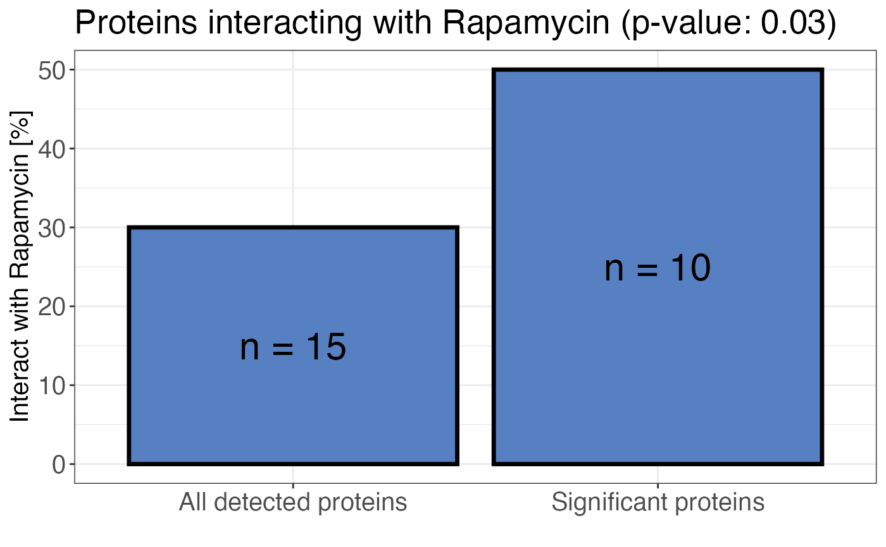

R/calculate_treatment_enrichment.R
calculate_treatment_enrichment.RdCheck for an enrichment of proteins interacting with the treatment in significantly changing proteins as compared to all proteins.
calculate_treatment_enrichment(
data,
protein_id,
is_significant,
binds_treatment,
treatment_name,
plot = TRUE
)a data frame contains at least the input variables.
a character column in the data data frame that contains the protein
accession numbers.
a logical column in the data data frame that indicates if the
corresponding protein has a significantly changing peptide. The input data frame may contain
peptide level information with significance information. The function is able to extract protein
level information from this.
a logical column in the data data frame that indicates if the
corresponding protein binds to the treatment. This information can be obtained from different
databases, e.g. UniProt.
a character value that indicates the treatment name. It will be included in the plot title.
a logical value indicating whether the result should be plotted or returned as a table.
A bar plot displaying the percentage of all detect proteins and all significant proteins
that bind to the treatment. A Fisher's exact test is performed to calculate the significance of
the enrichment in significant proteins compared to all proteins. The result is reported as a
p-value. If plot = FALSE a contingency table in long format is returned.
# Create example data
data <- data.frame(
protein_id = c(paste0("protein", 1:50)),
significant = c(
rep(TRUE, 20),
rep(FALSE, 30)
),
binds_treatment = c(
rep(TRUE, 10),
rep(FALSE, 10),
rep(TRUE, 5),
rep(FALSE, 25)
)
)
# Plot treatment enrichment
calculate_treatment_enrichment(
data,
protein_id = protein_id,
is_significant = significant,
binds_treatment = binds_treatment,
treatment = "Rapamycin",
plot = TRUE
)

# Calculate treatment enrichment
enrichment <- calculate_treatment_enrichment(
data,
protein_id = protein_id,
is_significant = significant,
binds_treatment = binds_treatment,
plot = FALSE
)
enrichment
#> # A tibble: 4 × 4
#> binds_treatment significant n pval
#> <lgl> <lgl> <int> <dbl>
#> 1 FALSE FALSE 25 0.0255
#> 2 FALSE TRUE 10 0.0255
#> 3 TRUE FALSE 5 0.0255
#> 4 TRUE TRUE 10 0.0255